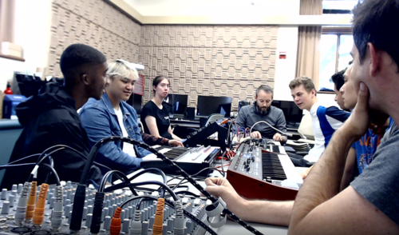
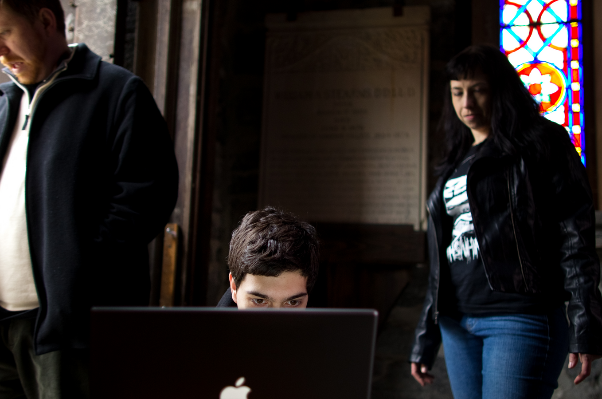

I am an Assistant Professor of Computer Science at Barnard College, Columbia University. I received my PhD in Computer Science working on Program Synthesis and Computer Music at Yale. I develop program synthesis and analysis techniques to provide programmers new ways to interface with code.
See current projects on the lab website
For the full list, see Google Scholar.
Embedding Alignment in Code Generation for Audio
Sam Kouteili, Hiren Madhu, George Typaldos, and Mark Santolucito
CoRR 2025 — also presented at AI for Music workshop at NeurIPS 2025
Automated Power Domain Insertion and Control in Dataflow Circuits
Martha Barker, Mark Santolucito, Stephen A Edwards, and Martha Kim
MEMOCODE 2025
Statically Inferring Usage Bounds for Infrastructure as Code
Feitong Qiao, Aryana Mohammadi, Jürgen Cito, Mark Santolucito
VSTTE 2024
Can Reactive Synthesis and Syntax-Guided Synthesis Be Friends?
Wonhyuk Choi, Ruzica Piskac, Bernd Finkbeiner, Mark Santolucito
PLDI 2022
Learning CI Configuration Correctness for Early Build Feedback
Mark Santolucito, Jialu Zhang, Ennan Zhai, Jürgen Cito and Ruzica Piskac
SANER 2022
TSL Synthesis Synthesizer: Reconfigurable Signal Flows through Program Synthesis
Michel Vazirani, Wonhyuk Choi, and Mark Santolucito
NIME 2021
Analyzing Infrastructure as Code to Prevent Intra-update Sniping Vulnerabilities
Julien Lepiller, Ruzica Piskac, Martin Schaef, Mark Santolucito
TACAS 2021
Grammar Filtering for Syntax Guided Synthesis
Kairo Morton, William Hallahan, Elven Shum, Ruzica Piskac, Mark Santolucito
AAAI 2020 (Oral Presentation)
Formal Methods and Computing Identity-based Mentorship for Early Stage Researchers
Mark Santolucito, Ruzica Piskac
SIGCSE 2020
Temporal Stream Logic - Synthesis Beyond the Bools
Bernd Finkbeiner, Felix Klein, Ruzica Piskac, Mark Santolucito
CAV 2019
Live Programming By Example
Mark Santolucito, William Hallahan, Ruzica Piskac
CHI 2019 Extended Abstract
Synthesizing Configuration File Specifications with Association Rule Learning
Mark Santolucito, Ennan Zhai, Rahul Dhodapkar, Aaron Shim, Ruzica Piskac
OOPSLA 2017
Version space learning for verification on temporal differentials
Mark Santolucito
ISSTA 2017
Probabilistic Automated Language Learning for Configuration Files
Mark Santolucito, Ennan Zhai, Ruzica Piskac
CAV 2016
With the COVID-19 pandemic, the collaborative nature of music making is a sorely needed therapy. Through Zoom we can collaboratively perform, but high-latency makes this challenging with traditional approaches. Solutions exist to minimize this latency, but if we are stuck with Zoom, how can we perform around and with the latency?
With the Yale Open Music Initiative (OMI), we have hosted a number of analog synthesizer jam sessions. You can listen to recordings of these synth jams on the OMI homepage.

The Yale Open Music Initiative now hosts a regualr end-of-semester concert. For the kickoff concert in Fall of 2018, I composed a live coding piece, Wakoudonohiroba. From the concert notes - "Wakoudonohiroba extends the calculated interface of live coding with a more visceral experience of hand signs and motions. Live coding is used to control the high level narrative and arch of the piece, while the artist uses motion tracking technology to control fine grained details of the sound synthesis."
Instamirror was a interactive art installation presented at the GLS 9.0 art show at University of Madison, Wisconsin. Read a summary of the work or the full proceedings of the conference.
Isosteeple was a sound art installation funded by the Amherst College Copeland Colloquium "Art in Place and the Place of Art". The installation was centered around interaction audio sampling by use of motion detection. Read a review.

MTM combines dance with custom motion tracking software to trigger various collections of samples. This early exploration of simple motion tracking tells a story through audio and physical interaction with an unseen (aural) environment.